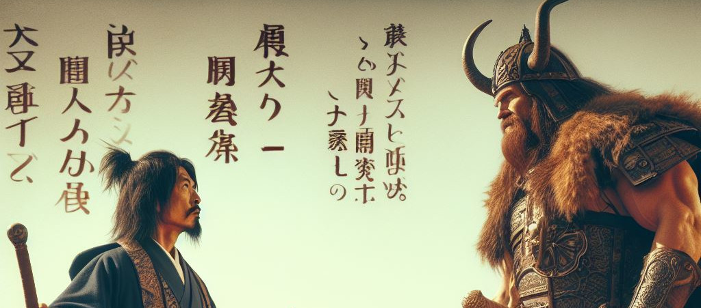

Ximira VS Conan
Em uma era esquecida, onde a magia e o aço governavam, o grande professor Ximira enfrentou Conan, o Bárbaro, em um duelo épico que entraria para a história. Ximira, conhecido por sua sabedoria e poderes arcanos, desafiou o musculoso guerreiro cimério, cuja fama de invencível ecoava pelos quatro cantos do mundo.
E assim, o grande professor Ximira venceu Conan, o Bárbaro, não pela força, mas pelo poder do conhecimento e da magia.
Esta passagem celebra o triunfo do intelecto sobre a força bruta, um tema atemporal que ressoa através das eras.